<mat-toolbar>
  
  <span class="title">#YoProgramo</span>
  <span class="example-spacer"></span>
  <div class="navbar-networks">
    <button mat-mini-fab color="primary" aria-label="Example icon button with a filter list icon">
      <mat-icon>add</mat-icon>
    </button>
    <div class="networks" cdkDropList (cdkDropListDropped)="drop($event)">
      <a href={{network.link}}  *ngFor="let network of networks" cdkDrag><i class={{network.icon}}></i></a>
    </div>
  </div>

  <button mat-raised-button color="primary" (click)="openDialog('1500ms', '1500ms')">Login</button>
</mat-toolbar>
